Recognized parties
Parties that ful fill these criteria are called recognized parties. They are given a unique symbol by the Election Commission. A registered but unrecognized political party cannot contest election on its own symbol. This party has to choose one symbol form free symbol 'poll panel' announced by the Election Commission.
Box Item
Free symbols ‘Poll panel’
As per the Election Symbols order 1968, symbols are either reserved or free. • A reserved symbol is meant for a recognized political party. • A free symbol is reserved for unrecognized party
Majority Party
The Political Party whose number of candidates elected is more than the others is called the majority party. The Majority Party forms and runs the government. They select and appoint their ministers to run the government. They play a decisive role in making laws for the country
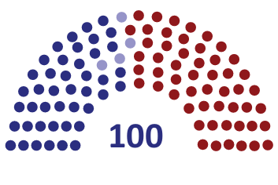
Picture, picture description begins the picture showing majority party, picture description ends
Minority Party
Those with lesser number of elected candidates are called the minority party.
Opposition Party
The party which gets second largest number of seats next to the majority party in the election is called the Opposition party. An effective opposition is very essential for the successful operation of the democracy. They are as important as that of ruling party. They check the autocratic tendencies of the ruling party. They critically examine the policies and bills introduced by the government. They raise their voice on the failures and wrong policies. They highlight important issues which are not acted upon the Government. The leader of the opposition party enjoys the rank of Cabinet Minister.
Coalition Government
In a Multiparty system a single party sometimes may not secure the majority required to form the government. In such a case, some parties join together to form the government. Such government is called Coalition Government.
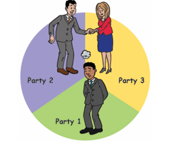
Picture, picture description begins the picture explaining coalition government. picture description ends.
Electoral Symbols and its importance
An electoral symbol is a standardised symbol allocated to a political party. They play an important role in elections. They can be easily identified, understood, remembered and recognized by the voters. The Election commission has stopped allotting animals as symbols. The only exceptions are the lion and the elephant. The symbol of nationally recognized parties is standard throughout India. That symbol will not be allotted to any other party or individual.
State parties are allotted to certain symbols that no other party can use the symbol in that particular state but which different parties in different states can use the same symbol. (Example, Shiv Sena in Maharashtra and Jharkhand Mukti Morsha in Jharkhand use bow and arrow as their symbol)
Both National and Regional parties trigger the growth of the nation and work for the welfare of the people.
Table is given. Table description begins
National Party |
Regional or State Party |
National parties are political parties which participate in different elections all over India.
|
Regional parties are political parties which participate in different elections but only within one state. |
It should be strong enough in at least four states.
|
It should be strong enough in at least one or two states. |
It has an exclusive symbol throughout the country
|
A symbol is reserved for it in the state in which it is recognized. But the same symbol can be allotted to different parties in different states. |
It resolves State, National and International issues
|
It promotes regional and state interest
|
Table description ends.
QR CODE IS GIVEN, QR code description begins NUMBER, O,L,R,X,D QR code description ends.
1, Choose the correct answer
1, What is meant by Bi-party system?
a) Two parties run the government,
b) Two members run a party,
c) Two major political parties contest election,
d) None of these.
2, Which system of government does India have?
a) Single–party system,
b) Bi-party system,
c) Multi-party system,
d) None of these
3, Recognition of a political party is accorded by Dash
a) The Election commission,
b) The president,
c) The supreme court,
d) A committee
4, Political parties are generally formed on the basic of DASH.
a) Religious principles,
b) Common interest,
c) Economic principles,
d) Caste
5, Single-party system is found in DASH.
a) India,
b) U.S.A,
c) France,
d) China
2, Fill in the blanks
1, DASH form the back bone of democracy.
2, Every party in our country has to register with DASH.
3, Political parties serve as intermediaries between the DASH and DASH.
4, A registered but DASH political party cannot contest election on its own symbol.
5, The leader of the opposition party enjoys the rank of DASH.
3, Match the following
1, Democracy, criticize the government policies
2, Election commission, forms the government
3, Majority party, rule of the people
4, Opposition party, free and fair election
4, Consider the following statements.
Tick the appropriate answer
1, Which of the following statement is or are correct?
a) Every party in the country has to register with the election commission.
b) The commission treats all the parties equally
c) Election commission allots a separate symbol for recognized parties.
d) All the above.
2, Assertion: Majority party plays a decisive role in making laws for the country.
Reason: The number of candidates elected is more than the others in the election.
a) Reason is the correct explanation of Assertion.
b) Reason is not the correct explanation of Assertion.
c) Reason is wrong Assertion is correct.
d) Assertion and Reason are wrong.
5, Answer in one or two sentences
1, Which are the basic components of a political party?
2, Name the three major types of party system.
3, Name the countries which follow Bi – party system.
4, Write a note on Coalition Government.
6, Answer the following
1, Write any four functions of political party?
2, When is a political party recognized as a National Party?
7, HOTs
1, Is political party necessary for a democratic country?
2, Give any three names of National party, Regional party, and Registered but unrecognized party
8, Activity
1, Write an election manifesto (if you were a party leader).
Political Parties
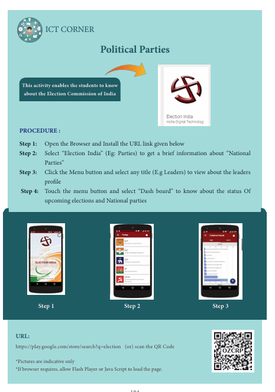
This activity enables the students to know about the Election Commission of India
PROCEDURE:
Step 1: Open the Browser and Install the URL link given below
Step 2: Select “Election India” (Example, Parties) to get a brief information about “National Parties”
Step 3: Click the Menu button and select any title (Example,Leaders) to view about the leaders profile
Step 4: Touch the menu button and select “Dash board” to know about the status of upcoming elections and National parties
QR CODE IS GIVEN, QR code description begins NUMBER, O, Z, C, R, P. QR code description ends
URL:
https://play.google.com/store/search?q=election (or) scan the QR Code
*Pictures are indicative only *If browser requires, allow Flash Player or Java Script to load the page
To know the meaning of production
To understand the types of production
To know the factors of production
To understand the characteristics of factors of production
QR CODE IS GIVEN, QR code description begins NUMBER, 3, F, D, E,6. QR code description ends.
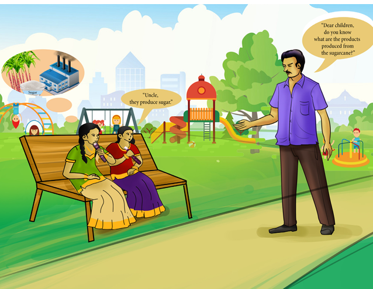
Picture, picture description begins a conversation is given in this picture. picture description ends.
Conversation,
Person 1, dear children do you know what are the products produced from the sugarcane
Person 2, uncle they produce sugar
One day Yazhini and Josphine were sitting in a park near their house and eating sugarcane. At that time yazhini’s uncle Raja came there and started talking with them.
Uncle, “Dear children, do you know what are the products produced from the sugarcane? Both of them thought for a while and said, ‘uncle, they make sugar’.
Uncle, You are right. Do you know how they produce sugar for our consumption?
Yazhini, No uncle. But if you tell us we will know about it uncle.
Uncle, Ok. I shall tell you and you in turn must tell your friends about it.
Yazhini & Josphine, Ok uncle, He began saying.
Sugarcane is cultivated in agricultural fields. This is the primary production. To get sugar, we take sugarcane to the sugar factories, by using the machine we produce sugar. This is the secondary production. So like sugar industries many other industries are known as secondary sectors and generally described as manufacturing sectors.
The tertiary sectors provide all those services, which enable the finished goods to reach in the hands of consumer. These industries include traders, banking, insurance, etcetera
Production is the process of changing the raw materials into finished product. Here the factors of production are the input like, sugarcane, machinery, labours, etcetera and sugar is the output. Now, let us learn about production and the various factors included in production like land, labour, capital and entrepreneur and its characteristics in detail.
Yazhini and Josphine, Ok uncle.
There are two main activities in an economy such as production and consumption. Similarly, there are two kinds in economy, producers and consumers. Well-being is made possible by efficient production and by the interaction between producers and consumers. In the interaction, consumers can be identified in two roles both of which generate well being. Consumers can be both customers of the producers and suppliers to the producers. The customer’s well-being arises from the commodities when they buy and consume. The supplier’s well being is related to the income they receive when they sell the commodities and services. In an economy all are consumers but all are not producers or sellers
Production is a process of combining various material inputs and immaterial inputs in order to make something for consumption (the output). It is the act of creating an output, a good or service which has value and contributes to the utility of individuals.
Production in economics refers to the creation of those goods and services which have exchange value. It means the creation of utilities. Utility means want satisfying power of a product. According to the nature of utilities they are classified into form utility, time utility and place utility.
Form utility
If the physical form of a commodity is changed, its utility may increase. Example, the demand and uses of cotton increases, if it is converted into clothes.
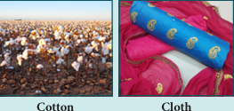
Picture, picture description begins the clip is showing cotton and cloth. picture description ends.
Place utility
If a commodity is transported from one place to another, its utility may increase.
Example, if rice is transported from Tamilnadu to Kerala, its utility will be more.
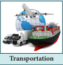
Picture, picture description begins the picture resembling transportation. picture description ends
Time utility
If the commodity is stored for future usage, its utility may increase.
Example, if agricultural commodities which are used by the consumers throughout the year like Paddy, Wheat, etcetera are stored for future use its utility increases.
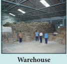
Picture, picture description begins The clip showing a warehouse. picture description ends.
DO YOU KNOW? (Box Item)
Indian Economy is a Mixed Economy. Private and Public Sectors co-exist
There are three types of production.
They are,
1, Primary production,
2, Secondary Production,
3, Tertiary Production
1. Primary Production
Primary production refers to the state of activity in which natural resources are directly used. Since agricultural is given prime importance, it is also referred as agricultural sector production.
Agriculture, forestry, fishing, mining and oil extraction are examples to primary sector.
2. Secondary Production
The process of manufacturing products by using primary products as raw materials is known as secondary level production. Since industries are given prime importance, it is also referred as industrial sector production. Manufacturing of cars, clothing, chemicals, engineering and building etcetera. are examples to secondary sector.
Box Item
Primary sector and Secondary Sector Production
Cotton (Primary sector) – Cotton Industry (Secondary Sector) = Cloth Production
Iron ore (Primary sector) – Iron Industry (Secondary sector) = Material Production
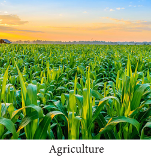
Picture, picture description begins the clip showing agriculture. picture description ends.
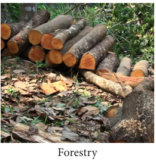
Picture, picture description begins the picture showing forestry. picture description ends.
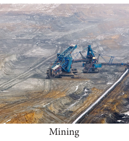
Picture, picture description begins the clip showing mining. picture description ends
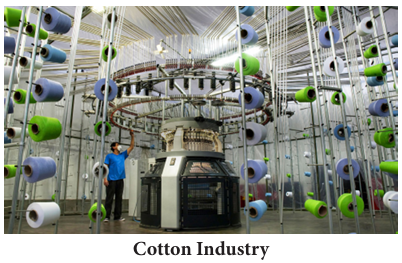
Picture, picture description begins the picture showing cotton industry. picture description ends
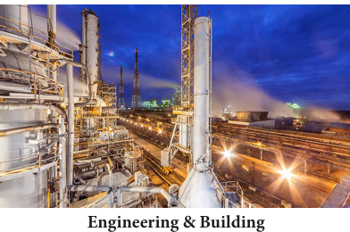
Picture, picture description begins the photo resembles engineering and building picture description ends.
3. Tertiary Production
Tertiary production is known as the services which are not visible rendered by the teachers, doctors etcetera, are to the economy. Banking, insurance, education, health and defence etcetera. are examples to service sector.
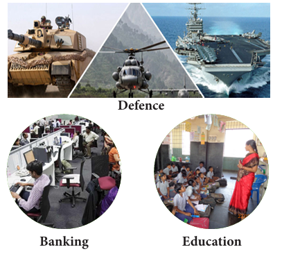
Picture, picture description begins Tertiary Production Picture is given. Picture refers Defence, Banking and Education. picture description ends.
DO YOU KNOW? (Box Items)
The most to the Gross Domestic Product of our country is contributed by the tertiary sector.
Factors of Production
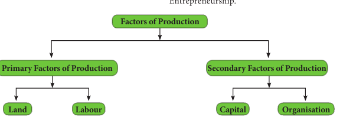
Picture, picture description begins Factors of production flow chart is given. Factors of Production divided into Primary factors of Production and Secondary factors of Production. Primary factors of Production divided into Land and Labour. Secondary factors of Production divided into Capital and Organisation is given. picture description ends.
Factors of production are known as inputs of production which are transformed into output or products. There are two main divisions of factors of production. They are,
(1) Primary factors of production and
(2) Derived factors of production or Modern factors of production or secondary factors of production.
Primary factors of production are Land and Labour. Derived factors of production are capital and organisation.
Capital is known as investment and the organisation is known as organising Land, Labour and Capital for producing products. Organisation is also known as Entrepreneurship
Primary Factors of Production, Land and Labour
Secondary Factors of Production, Capital and Organisation
Land
Land as a factor of production refers to all those natural resources or gifts of nature which is provided freely to man. It includes within itself several things such as land surface, air, water, minerals, forests, rivers, lakes, seas, mountains, climate, and weather. Thus, land includes all things that are not made by man.
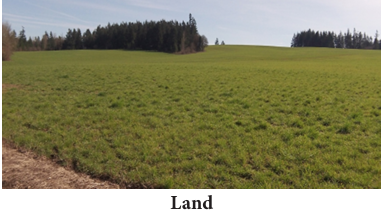
Picture, picture description begins the clip showing a land picture description ends.
Box Item
Land can take on various forms, on the basis of resources available from a particular piece of Land. For example, agricultural land when it is cultivated. Commercial land when it is sold.
Characteristics of Land
1, Land is a Free Gift of Nature
Man has to make efforts in order to acquire other factors of production. But to acquire land no human efforts are needed. Land is not the outcome of human labour. Rather, it existed even long before the evolution of man.
2, Land is fixed in supply
The total quantity of land does not undergo any change. It is limited and cannot be increased or decreased with human efforts. No alteration can be made in the surface area of land.
3, Land is imperishable
All man-made things are perishable and these may even go out of existence. But land is imperishable. Thus it cannot go out of existence.
4, Land is a Primary Factor of Production
In any kind of production process, we have to start with land. For example, it helps to provide raw materials for industries and to produce crops.
5, Land is Immovable
It cannot be transported from one place to another. For instance, no portion of India’s surface can be transported to some other country.
6, Land has some Original Indestructible Powers
There are some original and indestructible powers of land, which a man cannot destroy. Its fertility may be varied but it cannot be destroyed completely.
7, Land Differs in Fertility
Fertility of land differs on different pieces of land. One piece of land may produce more and the other may be less.
As a gift of nature, the initial supply price of land is zero. However, when used in production, it becomes scarce. Therefore, it fetches a price accordingly.
Labour
Labour is the human input into the production process. Alfred Marshall defines labour as, ‘the use of body or mind, partly or wholly, with a view to secure an income apart from the pleasure derived from the work’
DO YOU KNOW? (Box Item)
Adam smith is known as Father of Economics and his Economics is based on wealth. He wrote two classic works, “The Theory of Moral sentiments (1759)”, and " An Inquiry into the Nature and Causes of the Wealth of Nations (1776)"
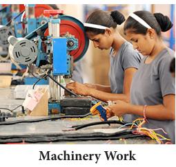
Picture, picture description begins the photo showing a machinery work. picture description ends.
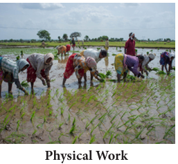
Picture, picture description begins the clip showing a physical work picture description ends.
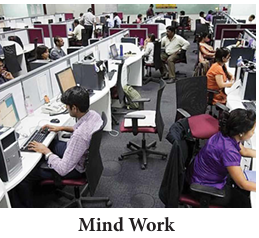
Picture, picture description begins the picture showing mind work. picture description ends.
Characteristics of Labour
Labour is more perishable than other factors of production. It means labour cannot be stored. The labour of an unemployed worker is lost forever for that day when he does not work. Labour can neither be postponed nor accumulated for the next day. It will perish. Once it is lost, it is lost forever.
Labour is an active factor of production. Neither land nor capital can yield much without labour.
Labour is not homogeneous. Skill and dexterity vary from person to person.
Labour cannot be separated from the labourer.
Labour is mobile. Man moves from one place to another from a low paid occupation to a high paid occupation.
Individual labour has limited bargaining power. He cannot fight with his employer for a rise in wages or improvement in work-place conditions. However, when workers combine to form trade unions, the bargaining power of labour increases.
Division of Labour
The concept ‘Division of Labour’ was introduced by Adam Smith in his book ‘An Inquiry into the Nature and Causes of the Wealth of Nations'
Division of labour means dividing the process of production into distinct and several component processes and assigning each component in the hands of a labour or a set of labourers, who are specialists in that particular process
Example: A Tailor stitches a shirt in full. In the case of Garments exporters, cutting of cloth, stitching of hands, body, collars, holes for buttons, stitching of buttons etcetera, are done independently by different workers. Therefore, they are combining the parts into a whole shirt.
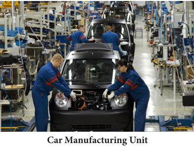
Picture, picture description begins the photo showing a car manufacturing unit. picture description ends.
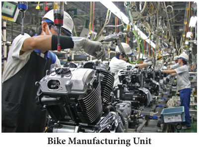
Picture, picture description begins the photo showing a bike manufacturing unit. picture description ends.
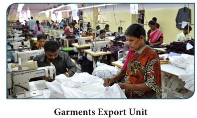
Picture, picture description begins the photo showing a garments export manufacturing unit. picture description unit.
Merits of division of labour
• It improves efficiency of labour when labour repeats doing the same tasks.
• It leads to the use of modern machinery in production, resulting in inventions. Ex. More’s Telegraphic Codes.
• Time and raw materials are used very efficiently
Demerits of division of labour
• Repetition of the same task makes labourer to feel that the work is monotonous and stale. It kills the humanity in him.
• Narrow specialization reduces the possibility of labourer to find alternative avenues of employment. This results in unemployment.
• Reduce the growth of handicrafts and the worker loses the satisfaction of having made a commodity in full.
Box item
Students are asked to visit the nearest private tailoring shop and Garments Export Industry. Teacher and students are asked to discuss about the process of making dresses in the tailoring shop and Garments Export Industry
Capital is manmade physical goods used to produce other goods and services. In the ordinary language, capital means money. In economics, capital refers to that part of man made wealth which is used for the further production of wealth. All wealth is not capital but all capital is wealth. According to Marshall, 'Capital consists of those kinds of wealth other than free gifts of nature, which yield income'.
Forms of capital
1, Physical Capital or Material Resources, Example, Machinery, tools, buildings, etcetera
2, Money capital or Monetary Resources, Example, Bank deposits, shares and securities, etcetera
3, Human capital or Human Resources, Example, Investments in education, training and health
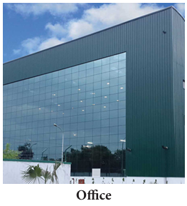
Picture, picture description begins the photo showing a office. picture description ends.
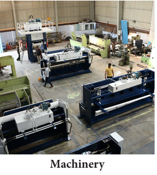
Picture, t picture description begins he clip showing a machinery. picture description ends.
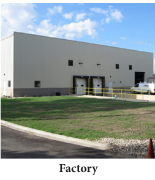
Picture, picture description begins the clip showing a factory. picture description ends.
Characteristics of Capital
• Capital is a passive factor of production
• Capital is man-made
• Capital is not an indispensable factor of production
• Capital has the highest mobility
• Capital is more flexibility
• Capital is productive
• Capital Lasts Long
• Capital involves present sacrifice to get future benefits
Entrepreneur or Organisation
An entrepreneur is a person who combines the different factors of production (land, labour and capital), in the right proportion and initiates the process of production and also bears the risk involved in it.
The entrepreneur is also called ‘Organizer’. In, modern times, an entrepreneur is called ‘the changing agent of the society’. He is not only responsible for producing the socially desirable output but also to increase the social welfare.
Picture, picture description begins the picture showing an entrepreneur. picture description ends.
Characteristics of Entrepreneur
• Identifying profitable investible opportunities
• Deciding the location of the production unit
• Making innovations
• Deciding the reward payment
• Taking risks and facing uncertainties
Box item
Students are asked to visit some entrepreneurs in their nearest home town and collect the information of his businesses. Teacher and students discuss about the entrepreneurs.
QR CODE IS GIVEN, QR code description begins NUMBER, Q.9.L.V.X QR code description begins
1, Choose the correct answer
1, Production refers to
a) destruction of utility,
b) creation of utilities,
c) exchange value,
d) none of these
2, Utilities are in the nature of
a) form utility,
b) time utility,
c) place utility,
d) all of these
3, Primary factors are
a) land, capital,
b) capital, labour,
c) land, labour, d) none of these
4, The entrepreneur is also called
a) exchanger
b) Agent
c) organizer
d) communicator
2, Fill in the blanks
1, DASH means want satisfying power of a product.
2, Derived factors are DASH and DASH
3, DASH is a fixed in supply.
4, DASH is the human input into the production process.
5, DASH is the man made physical goods used to produce other goods and services.
3, Match the following
1, Primary production, Adam smith
2, Time utility, fishing, mining
3, Wealth of nation, entrepreneur
4, Human capital, stored for future
5, Innovator, education, health
4, Give short answer
1, What is production?
2, What is utility?
3, Name the types of utility.
4, What are the factors of production?
5, Define Labour.
6, Define Division of labour.
7, Write the forms of capital.
8, Write the three characteristics of entrepreneur
5, Give brief answer.
1, Explain the types of production.
2, What is land? What are the characteristics of land?
3, Explain the merits and demerits of division of labour.
4, Describe the characteristics of capital
6, Activity and Project
1, Students are asked to prepare a chart containing dummy images of primary, secondary and tertiary sectors images.
2, Students are asked to visit local farmers and to discuss about the land and its characteristics. Collect some photographs of land and make an album.
7, Life skills
1, Students to know about the characteristics of entrepreneur, Set up your classroom like an industry. Some Students are asked to act like a businessman, Do the industries activities. Teacher and students together discuss about the entrepreneur and their important of development of society.
1, H L Ahuja, Principles of Micro Economics
2, K P M Sundharam, Business Economics
3, K K Dewett, Modern Economic Theory
SOCIAL SCIENCE 7th Stranded, Term 1, List of Authors and Reviewers
HISTORY
Chair Person
Dr. K A MANIKUMAR, Professor & Head (Retired) Dept. of History, Manonmaniam Sundaranar University, Tirunelveli District.
Copy Editor
K VENKATESH
Lesson Writers
H. USHA, B T Assistant, Sri. R.K.M. Sarada Vidyalaya, Government Higher Secondary School, Usman Road, T Nagar, Chennai.
H. ARMSTRONG, B T Assistant, St.Joseph’s College Higher Secondary School, Trichy.
DENIS RAYAR, B T Assistant. Marwar Government (Boys) Higher Secondary School, Acharapakkam, Kanchipuram.
Content Readers
Doctor. S. RAVICHANDRAN, Associate Professor (Retired), Raju’s College, Rajapalayam.
Dr. K. SURESH, B T Assistant, Kumara Rajah Muthiah Higher Secondary School, Adyar, Chennai.
S. GOMATHI MANICKAM, B T Assistant, Government Higher Secondary School, Old Perungalathur, Chennai.
S. RAJESWARI, B T Assistant, Government Higher Secondary School, Nellikkuppam, Kanchipuram.
A. SAGAYA SINI, B T Assistant, Government Higher Secondary School, Nemmeli, Kanchipuram
GEOGRAPHY
Domain Expert
Dr. R. JAGANKUMAR, Asst. Professor & Head, Dept of Geography, Bharathidasan University, Trichy.
Reviewers
Dr. A. SENTHILVELAN, Assistant Professor, Dept of Geography, Kunthavai Nachiyaar Govt. Arts College for Women, Thanajavur.
Dr. R. VINODH KUMAR, Assistant Professor, Dept. of Education, Periyar University, Salem.
Authors
N. HEMAVATHY, B.T. Asst. Govt, ADW Government Higher Secondary School, Kannigapuram, Chennai-12.
Dr. M. KAMALA, PG Asst., Arignar Anna Govt. Higher Secondary School, Kumbakonam, Thanjavur District.
M. ANANDAKUMAR, PG. Asst., Govt Higher Secondary School, T. Palur, Ariyalur District
CHITRA UMAPATHY, BT Asst. S B I O A, Model Matric Higher Secondary School, Mogappair, Chennai-37.
CIVICS
Domain Expert and Reviewer
Dr. M. KALIYAPERUMAL, Prof. & Head of the Dept of, Political Science (Retired), Presidency College, Chennai.
Authors
Dr. S. GUNASEKAR, PG. Asst., Govt Higher Secondary School, Pullukatuvalasai, Tenkasi, Tirunevelli.
S. GOMATHI MANICKAM, B.T. Asst, Govt Higher Secondary School, Old perungalathur, Chennai.
ECONOMICS
Domain Expert
Dr. A. PARAMASIVAN, Associate Professor (Retired) MDT, Hindu College Tirunelveli.
Reviewer
Dr. CHITHRA REGIS, Asst. Professor, Dept of Economics, Loyola College, Chennai.
Author
L. GOWSALYA DEVI, PG. Asst. Govt Higher Secondary School, Thoppur, Dharmapuri.
Academic Co-ordinator
Dr. K. RAMARAJ, Vice principal, DIET, T. Kallupatti Madurai.
Subject Co-ordinator
DENIS RAYAR, B.T. Asst., Marwar Govt (Boys) Higher Secondary School, Acharapakkam, Kanchipuram.
ICT Coordinators
P. CHINNADURAI, SGT, PUPS, T. Sanarpalayam, Mulanur, Tiruppur.
D.NAGARAJ, B.T. Asst, Govt Higher Secondary School, Rappusal, Pudukottai.
EMIS Technology Team
R.M. Satheesh, State Coordinator Technical, TN EMIS, Samagra Shiksha.
K.P. Sathya Narayana, IT Consultant, TN EMIS, Samagra Shikaha
R. Arun Maruthi Selvan, Technical Project Consultant, TN EMIS, Samagra Shiksha
Art and Design Team Illustration & Image Credits
K.T. GANDHIRAJAN, Tamil Virtual Academy
R. MUTHUKUMAR
B. RAVIKUMAR
Layout
V.S. JOHNSMITH
ASHOK KUMAR
PETCHIMUTHU KAILASAM
Wrapper
KATHIR ARUMUGAM
QC
MANOKAR RAD
HAKRISHNAN
Co-ordination
RAMESH MUNISAMY
Typist
KALPANA JAGANATHAN, Irumbedu
This book has been printed on 80 GSM Elegant Maplitho paper. Printed by offset at